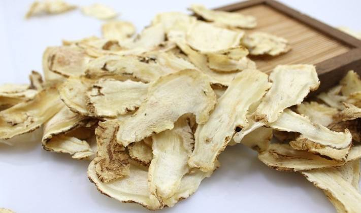

<<<返回首页
当归饮片
分类：根及根茎类

功效：改善肺通气，免疫，抗炎，抗癌，抗菌，除自由基，抗老防老， 补血活血，痛经活络，美容，护发，祛皱，除斑
一、当归的禁忌: 过量口服当归煎剂、散剂偶有疲倦、嗜睡等反应，停药后可消失。当归挥发油穴位注射可使病人出现发热、头痛、口干、恶心等反应，可自行缓解。大剂量给药，会导致血压下降，剂量再加大则血压骤降，呼吸停止。当归乙醚提出物毒性较强，少量即可造成死亡。临床使用当归不可过量，服药后也应注意有无不良反应。因而，最好按医嘱服用。 二、当归吃法: 当归炖汤。当归炖汤是很常见的一种食用方式,对身体的调养有很大的帮助。此外还可以当归片泡水或者泡酒喝,或者购买--些当归制成的产品(补血当归精、当归补血口服液、阿胶当归口服液等)。 当归首乌鸡肉汤: 当归20克、何首乌20克、鸡肉200克、枸杞子15克。将鸡肉洗净切块与当归、何首乌、枸札同放锅内加清水适量煮至鸡肉烂熟时放入生姜、葱花、食盐、味精调味，饮汤食肉。鸡肉补气血。首乌养肝肾补血、当归养血和血，枸杞补肝肾、明目。几味合用有补肝肾、益气血之功能，适用于肝血不足所致的身体虚弱、头晕目眩、倦息乏力、心悸怔忡、失眠健忘、食欲不佳等症的补养和治疗。小编推荐:当归炖汤怎么吃当归黄芪茶:当归和黄芪两者同时使用，能起到血气双补的作用!适合贫血，气虚的人群。注意:感冒、女性经期不能喝。 李时珍《本草纲目》中提到:当归调血，为女人要药。现代研究也发现，当归含有大量的挥发油、维生素、有机酸等多种有机成分及微量元素，实验研究表明，当归能扩张外周血管，降低血管阻力，增循环血液量等。而当归煮蛋则是--道最为简单的药膳。 当归20克，鸡蛋1个，红枣4枚，加适量水煎煮，服食2月后觉得皮肤有光泽了，富有弹性，而且身体也觉得比以前轻快有力了很多。这是因为当归对于女性而言有补血、活血;调经止痛;润燥滑肠等等功效。鸡蛋则含有丰富的蛋白质、脂肪、维生素和铁、钙、钾等人体所需要的矿物质。加上制作也十分简易方便，疗效不错，尤其建议女性食用。 三、当归的用法: 洗净面部，用棉签蘸上少许当归液，面部色素沉着的地方不断涂擦，使皮肤吸收当归液中的有效成分，能达到治疗色素性皮肤病的效果。洗完头发，手上倒少许当归液，反复搓揉头发和头部，还能达到护发效果。当然，考虑到当归对子宫收缩的影响，所以孕妇，哺乳期的母亲以及婴幼儿不宜食用。
¥：88.88元/500g
友情链接：
百度
淘宝网
湖南文理学院官网
地址：湖南省常德市武陵区滨湖路3150号
联系方式：182****8916
其他：图片来源于网络 请勿转载
Copyright©2019 - 2020 湖南文理学院数理学院.All Right Reserved